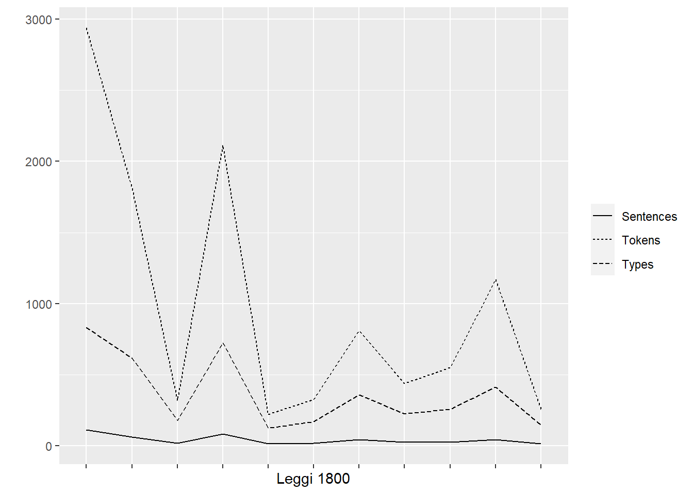
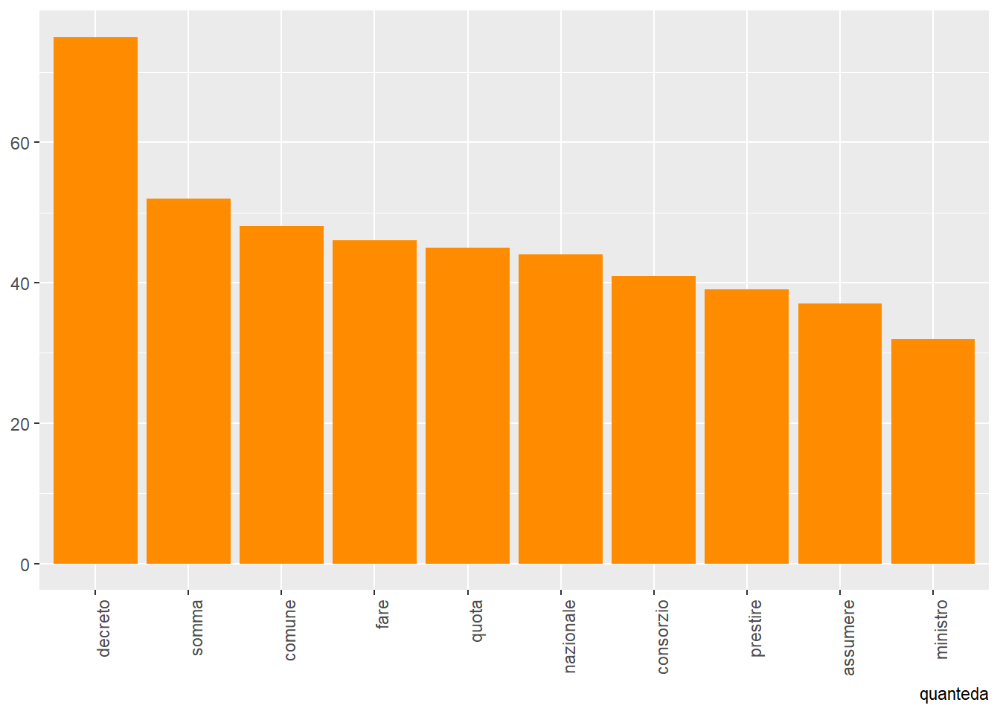

knitr::read_chunk("pre-analisi.R")Analisi testuale delle normative
Introduzione
Nel 1866, il Regno d’Italia affrontò una difficile e dispendiosa guerra contro l’Austria, nota come la terza guerra d’indipendenza, durante questo periodo, furono promulgate diverse normative che hanno contribuito a definire l’ordinamento giuridico del Regno d’Italia, esse rappresentano l’insieme delle norme che regolano una determinata materia o presiedono alla disciplina di un istituto o di un ordinamento giuridico
Errori ortografici
Controlliamo gli errori ortografici con il package hunspell.
parole_sbagliate
sara dell all dè pel dall SAVOJA nell
75 43 38 24 17 15 14 13
premii Reg Scialoja verra Borgatti CARIGNANO Crodara virtu
10 10 8 8 7 7 7 7
VOLONTA pei potra puo
7 6 6 5 Sostituiamo gli apostrofi
Vediamo che la maggior parte delle parole sbagliate manca di accento oppure sono preposizioni articolate senza l’ultima lettera.
df <- df |>
mutate(text = str_replace_all(text, "[\'’](?!\\s)", "' "))Sostituiamo quindi gli apostrofi con dei “blanks” tramite mutate di tidyverse.
Il package quanteda per il corpus
# CORPUS QUANTEDA ---------------------------------------------------------
corpus <- corpus(df)
head(summary(corpus)) Text Types Tokens Sentences
1 3108_1866.rtf 831 2938 111
2 3162_1866.rtf 616 1809 60
3 3171_1866.rtf 176 319 17
4 3201_1866.rtf 723 2114 84
5 3216_1866.rtf 121 220 14
6 3218_1866.rtf 169 325 18Tokenizzazione
quanteda_tokens<-corpus |>
tokens(remove_punct = TRUE,
remove_numbers = TRUE,
remove_symbols = TRUE)Togliamo le stopwords
##rimuovi stopwords con quanteda
quanteda_nosw_tokens <- quanteda_tokens |>
tokens_remove(stopwords("it")) #rimuovo parole sbagliate
quanteda_nosw_tokens <- quanteda_nosw_tokens |>
tokens_remove(c(parole_sbagliate,
"quali"))
#rimuovo parole con meno di 4 lettere
quanteda_nosw_tokens <- tokens_keep(quanteda_nosw_tokens, min_nchar = 4)Sottraiamo il totale dei token del corpus precedente a quello attuale:
print(sum(ntoken(quanteda_tokens))-sum(ntoken(quanteda_nosw_tokens))) ##quante sw sono state eliminate[1] 4316# LEMMATIZZAZIONE ---------------------------------------------------------
##trasformuamo i tokens in dataframe
df_pulito <- vapply(quanteda_nosw_tokens, paste, FUN.VALUE = character(1), collapse = " ") |>
corpus() |>
tidy()
df_pulito <- data.frame(
doc_id = docnames(corpus),
text = df_pulito$text
)
##usiamo udpipe
ud_model <- udpipe_download_model(language = "italian")Downloading udpipe model from https://raw.githubusercontent.com/jwijffels/udpipe.models.ud.2.5/master/inst/udpipe-ud-2.5-191206/italian-isdt-ud-2.5-191206.udpipe to C:/Users/huawei/OneDrive/Desktop/text mining/Progetto/italian-isdt-ud-2.5-191206.udpipe - This model has been trained on version 2.5 of data from https://universaldependencies.org - The model is distributed under the CC-BY-SA-NC license: https://creativecommons.org/licenses/by-nc-sa/4.0 - Visit https://github.com/jwijffels/udpipe.models.ud.2.5 for model license details. - For a list of all models and their licenses (most models you can download with this package have either a CC-BY-SA or a CC-BY-SA-NC license) read the documentation at ?udpipe_download_model. For building your own models: visit the documentation by typing vignette('udpipe-train', package = 'udpipe')Downloading finished, model stored at 'C:/Users/huawei/OneDrive/Desktop/text mining/Progetto/italian-isdt-ud-2.5-191206.udpipe'ud_model <- udpipe_load_model(ud_model$file_model)
df_pieno<- udpipe_annotate(ud_model, x = as.character(df_pulito$text)) |>
as.data.frame()
##ritrasformiamo il dataframe in tokens solo con i lemmi
doc_ids <- unique(df_pieno$doc_id)
name_mapping <- setNames(docnames(corpus), doc_ids)
df_pieno <- df_pieno |>
mutate(document_name = name_mapping[doc_id])
lemma <- df_pieno |>
group_by(document_name) |>
summarize(text = paste(lemma, collapse = " "))
quanteda_nosw_tokens <- lemma |>
corpus() |>
tokens()
quanteda_nosw_tokens <- quanteda_nosw_tokens |>
tokens_remove("na")Document-feature matrix
# ESPLORAZIONE CORPUS -----------------------------------------------------
##document-feature matrix
quanteda_dfm <- dfm(quanteda_nosw_tokens)
head(quanteda_dfm)Document-feature matrix of: 6 documents, 1,051 features (75.42% sparse) and 1 docvar.
features
docs regio decreto luglio ordinare nazionale milione effettivo 066u3108
text1 1 6 3 2 2 4 3 1
text2 2 15 8 0 1 0 0 0
text3 1 5 1 0 2 0 0 0
text4 1 7 4 0 4 0 0 0
text5 0 4 1 0 2 0 0 0
text6 1 4 1 0 3 0 0 0
features
docs eugenio principe
text1 2 1
text2 2 1
text3 2 1
text4 2 1
text5 0 0
text6 2 1
[ reached max_nfeat ... 1,041 more features ]Vocabolario
quanteda_vocabolario <- quanteda_dfm |>
textstat_frequency()
quanteda_vocabolario feature frequency rank docfreq group
1 decreto 75 1 11 all
2 somma 52 2 8 all
3 comune 48 3 4 all
4 fare 46 4 9 all
5 quota 45 5 8 all
6 nazionale 44 6 11 all
7 consorzio 41 7 4 all
8 prestire 39 8 8 all
9 assumere 37 9 7 all
10 ministro 32 10 11 all
11 prestito 32 10 10 all
12 ciascuno 32 10 5 all
13 ruolo 30 13 4 all
14 luglio 29 14 10 all
15 italia 29 14 11 all
16 lira 29 14 5 all
17 prestere 29 14 4 all
18 provincia 29 14 6 all
19 regno 29 14 11 all
20 finanze 28 20 11 all
21 obbligazione 28 20 6 all
22 articolo 27 22 8 all
23 legge 26 23 10 all
24 essere 26 23 8 all
25 pagamento 26 23 7 all
26 premio 26 23 7 all
27 agente 26 23 3 all
28 parte 25 28 7 all
29 cento 25 28 6 all
30 settembre 25 28 8 all
31 rare 24 31 6 all
32 titolo 23 32 5 all
33 dovere 23 32 4 all
34 riscossione 23 32 5 all
35 comuni 23 32 6 all
36 contribuente 21 36 6 all
37 ricevere 21 36 3 all
38 conto 21 36 11 all
39 addì 21 36 11 all
40 si 20 40 7 all
41 generale 19 41 10 all
42 ogni 19 41 5 all
43 interesse 19 41 6 all
44 lo 19 41 8 all
45 sigillo 19 41 11 all
46 consorzi 19 41 7 all
47 obbligazioni 19 41 2 all
48 presente 18 48 11 all
49 reddito 18 48 2 all
50 giorno 18 48 4 all
51 tare 18 48 3 all
52 luogo 18 48 11 all
53 reddire 17 53 2 all
54 complessivo 17 53 4 all
55 classe 17 53 2 all
56 ufficiale 17 53 11 all
57 aprile 17 53 5 all
58 nominale 17 53 6 all
59 caso 17 53 5 all
60 - 16 60 8 all
61 maggiore 16 60 4 all
62 termine 16 60 7 all
63 osservare 16 60 8 all
64 regio 15 64 8 all
65 decretare 15 64 8 all
66 pagare 15 64 5 all
67 ultimo 15 64 6 all
68 medesimo 15 64 5 all
69 potere 15 64 8 all
70 numero 15 64 4 all
71 assegnare 15 64 8 all
72 consolidare 15 64 4 all
73 banca 15 64 2 all
74 eugenio 14 74 7 all
75 individuale 14 74 5 all
76 direttore 14 74 3 all
77 corte 14 74 11 all
78 lire 13 78 4 all
79 versamento 13 78 3 all
80 capitale 13 78 5 all
81 pubblicazione 13 78 3 all
82 provincie 13 78 6 all
83 registrare 13 78 10 all
84 pubblico 13 78 5 all
85 iscrizione 13 78 1 all
86 maggio 12 86 6 all
87 esso 12 86 6 all
88 ottobre 12 86 3 all
89 semestrale 12 86 4 all
90 corrispondente 12 86 5 all
91 definitivo 12 86 4 all
92 provinciale 12 86 2 all
93 raccolta 12 86 11 all
94 governo 12 86 11 all
95 relativo 11 95 4 all
96 secondo 11 95 4 all
97 consegnare 11 95 5 all
98 insrire 11 95 11 all
99 dato 11 95 10 all
100 atti 11 95 11 all
101 guardasigilli 11 95 11 all
102 direzione 11 95 5 all
103 modo 10 103 3 all
104 ricchezza 10 103 4 all
105 mobile 10 103 4 all
106 montare 10 103 3 all
107 carico 10 103 2 all
108 mediante 10 103 4 all
109 provvisorio 10 103 3 all
110 esazione 10 103 3 all
111 suddetto 10 103 5 all
112 vittorio 9 112 8 all
113 emanuele 9 112 8 all
114 vista 9 112 7 all
115 consiglio 9 112 6 all
116 totale 9 112 2 all
117 isolato 9 112 3 all
118 dare 9 112 3 all
119 rendita 9 112 4 all
120 rendire 9 112 3 all
121 intero 9 112 2 all
122 altro 9 112 4 all
123 renditare 9 112 4 all
124 scadenza 9 112 2 all
125 portatore 9 112 4 all
126 mandare 9 112 8 all
127 tabella 9 112 2 all
128 chiunque 9 112 8 all
129 spettare 9 112 8 all
130 firenze 9 112 9 all
131 ammontare 9 112 3 all
132 atto 9 112 5 all
133 registro 9 112 2 all
134 frazione 9 112 3 all
135 nazione 8 135 8 all
136 rendito 8 135 3 all
137 seguente 8 135 2 all
138 estinzione 8 135 2 all
139 primo 8 135 4 all
140 fissare 8 135 6 all
141 venire 8 135 5 all
142 ordiniamo 8 135 8 all
143 determinare 8 135 6 all
144 eseguire 8 135 5 all
145 principe 7 145 7 all
146 savoja 7 145 7 all
147 carignano 7 145 7 all
148 luogotenente 7 145 7 all
149 grazia 7 145 7 all
150 autorità 7 145 7 all
151 proposizione 7 145 7 all
152 ripartire 7 145 4 all
153 applicazione 7 145 3 all
154 tasso 7 145 4 all
155 comprendere 7 145 3 all
156 imporre 7 145 2 all
157 sette 7 145 4 all
158 comunale 7 145 3 all
159 precedente 7 145 3 all
160 stato 7 145 3 all
161 valore 7 145 3 all
162 indicare 7 145 4 all
163 successivo 7 145 3 all
164 cartello 7 145 3 all
165 convertire 7 145 3 all
166 dire 7 145 5 all
167 avviso 7 145 3 all
168 notificazione 7 145 4 all
169 dichiarare 7 145 6 all
170 rimanere 7 145 4 all
171 effetto 7 145 3 all
172 considerare 7 145 4 all
173 commissione 7 145 2 all
174 mezzo 7 145 3 all
175 assunto 7 145 4 all
176 munito 7 145 7 all
177 stesso 7 145 4 all
178 crodara 7 145 7 all
179 visconti 7 145 7 all
180 rilasciare 7 145 2 all
181 esibitore 7 145 2 all
182 debito 7 145 3 all
183 cartella 7 145 2 all
184 milione 6 184 2 all
185 giugno 6 184 6 all
186 sentito 6 184 6 all
187 ministri 6 184 6 all
188 condizione 6 184 3 all
189 quindi 6 184 2 all
190 ragione 6 184 4 all
191 imposta 6 184 3 all
192 isolare 6 184 3 all
193 rispettivamente 6 184 2 all
194 compiere 6 184 1 all
195 prendere 6 184 4 all
196 inscrivere 6 184 2 all
197 stabilire 6 184 5 all
198 qualunque 6 184 2 all
199 centinaio 6 184 3 all
200 portare 6 184 3 all
201 facoltà 6 184 5 all
202 concorrente 6 184 2 all
203 forma 6 184 2 all
204 dopo 6 184 3 all
205 debire 6 184 4 all
206 semestro 6 184 2 all
207 tanto 6 184 4 all
208 estrazione 6 184 3 all
209 cinque 6 184 4 all
210 corrispondere 6 184 5 all
211 ricevuta 6 184 2 all
212 solo 6 184 3 all
213 unico 6 184 5 all
214 tesoro 6 184 4 all
215 lista 6 184 3 all
216 rappresentante 6 184 3 all
217 annesso 6 184 4 all
218 operazione 6 184 4 all
219 diretto 6 184 2 all
220 delegato 6 184 6 all
221 visto 6 184 6 all
222 approvare 6 184 5 all
223 apposito 6 184 2 all
224 ritirare 6 184 3 all
225 tardi 6 184 4 all
226 bollo 6 184 3 all
227 superare 5 227 2 all
228 risultante 5 227 3 all
229 cioè 5 227 2 all
230 classo 5 227 2 all
231 prima 5 227 3 all
232 seguire 5 227 4 all
233 comporre 5 227 1 all
234 distribuire 5 227 3 all
235 risultare 5 227 3 all
236 ottenere 5 227 2 all
237 cifra 5 227 1 all
238 stipendio 5 227 3 all
239 anno 5 227 3 all
240 ministeriale 5 227 4 all
241 mese 5 227 3 all
242 pure 5 227 2 all
243 diritto 5 227 4 all
244 alcuno 5 227 2 all
245 aperto 5 227 3 all
246 senza 5 227 3 all
247 direttamente 5 227 3 all
248 tale 5 227 4 all
249 ricorso 5 227 2 all
250 riscosso 5 227 3 all
251 locale 5 227 2 all
252 agosto 5 227 4 all
253 formare 5 227 4 all
254 media 5 227 1 all
255 schedere 5 227 1 all
256 matrice 5 227 3 all
257 modello 5 227 2 all
258 estimo 5 227 1 all
259 inferiore 5 227 3 all
260 notificare 5 227 2 all
261 preparare 5 227 1 all
262 elenco 5 227 2 all
263 accordo 5 227 3 all
264 cedolo 5 227 3 all
265 convenzione 5 227 3 all
266 gran 5 227 2 all
267 libro 5 227 2 all
268 stabilimento 5 227 1 all
269 fabbricare 4 269 2 all
270 prediale 4 269 2 all
271 basso 4 269 1 all
272 esente 4 269 4 all
273 spettante 4 269 3 all
274 medio 4 269 2 all
275 normale 4 269 2 all
276 rappresentare 4 269 2 all
277 consorziale 4 269 2 all
278 quando 4 269 3 all
279 eguale 4 269 2 all
280 principale 4 269 3 all
281 moltiplicare 4 269 2 all
282 quoto 4 269 3 all
283 sempre 4 269 3 all
284 mila 4 269 3 all
285 gennaio 4 269 3 all
286 norma 4 269 3 all
287 rata 4 269 2 all
288 rimborso 4 269 2 all
289 semestre 4 269 3 all
290 numerazione 4 269 2 all
291 tempo 4 269 4 all
292 effettuare 4 269 2 all
293 cedola 4 269 2 all
294 alienare 4 269 3 all
295 onere 4 269 2 all
296 interessato 4 269 2 all
297 sottoscrizione 4 269 3 all
298 nome 4 269 2 all
299 volere 4 269 3 all
300 spesa 4 269 3 all
301 sino 4 269 3 all
302 domanda 4 269 2 all
303 provvedere 4 269 3 all
304 ne 4 269 3 all
305 erario 4 269 3 all
306 speciale 4 269 4 all
307 versare 4 269 3 all
308 provvedimento 4 269 3 all
309 grafico 4 269 3 all
310 terreno 4 269 1 all
311 base 4 269 3 all
312 colonna 4 269 1 all
313 però 4 269 3 all
314 disposto 4 269 3 all
315 trovare 4 269 1 all
316 prescrizione 4 269 2 all
317 incaricare 4 269 2 all
318 mano 4 269 2 all
319 agorre 4 269 3 all
320 munire 4 269 3 all
321 sottoscrivere 4 269 2 all
322 rispettivo 4 269 2 all
323 vario 4 269 2 all
324 ricevuto 4 269 1 all
325 presentare 4 269 2 all
326 saldo 4 269 2 all
327 scadere 4 269 2 all
328 collo 4 269 3 all
329 marzo 4 269 2 all
330 effettivo 3 330 1 all
331 dividere 3 330 3 all
332 concorrere 3 330 1 all
333 settimo 3 330 1 all
334 paghare 3 330 2 all
335 individuo 3 330 2 all
336 così 3 330 2 all
337 minore 3 330 2 all
338 occorrere 3 330 3 all
339 resto 3 330 2 all
340 accertamento 3 330 2 all
341 impostare 3 330 2 all
342 superiore 3 330 2 all
343 migliaio 3 330 1 all
344 derivare 3 330 3 all
345 vantaggio 3 330 3 all
346 soltanto 3 330 2 all
347 ritenere 3 330 3 all
348 durante 3 330 1 all
349 pubblicare 3 330 2 all
350 ognuno 3 330 3 all
351 esonerare 3 330 2 all
352 vorre 3 330 3 all
353 avere 3 330 3 all
354 eleggere 3 330 1 all
355 intendere 3 330 3 all
356 deliberazione 3 330 2 all
357 capoluogo 3 330 2 all
358 immediatamente 3 330 2 all
359 eventuale 3 330 2 all
360 detto 3 330 2 all
361 andare 3 330 2 all
362 partire 3 330 3 all
363 ricorrere 3 330 2 all
364 spedizione 3 330 3 all
365 scopo 3 330 2 all
366 stabilito 3 330 3 all
367 tutto 3 330 3 all
368 soggetto 3 330 2 all
369 determinato 3 330 1 all
370 regolamento 3 330 2 all
371 sopra 3 330 3 all
372 sotto 3 330 3 all
373 necessario 3 330 2 all
374 istruzione 3 330 2 all
375 applicare 3 330 1 all
376 clare 3 330 1 all
377 citare 3 330 3 all
378 deposito 3 330 1 all
379 prossimo 3 330 3 all
380 entro 3 330 2 all
381 innanzi 3 330 2 all
382 assunta 3 330 2 all
383 mutuo 3 330 2 all
384 contenere 3 330 2 all
385 trasmettere 3 330 2 all
386 venti 3 330 2 all
387 dovuto 3 330 2 all
388 colla 3 330 3 all
389 conformità 3 330 2 all
390 cambio 3 330 2 all
391 ritiro 3 330 2 all
392 proprietà 3 330 2 all
393 presentazione 3 330 2 all
394 accordare 3 330 3 all
395 verso 3 330 2 all
396 centesimo 3 330 3 all
397 servizio 3 330 2 all
398 quello 3 330 1 all
399 tesoreria 3 330 2 all
400 leggi 3 330 3 all
401 consolidato 3 330 2 all
402 stabilimente 3 330 2 all
403 banche 3 330 1 all
404 firmare 3 330 1 all
405 distinto 3 330 1 all
406 figlia 3 330 1 all
407 assegno 3 330 1 all
408 ordinare 2 408 1 all
409 istituire 2 408 1 all
410 componente 2 408 1 all
411 intestare 2 408 2 all
412 intestazione 2 408 1 all
413 alto 2 408 1 all
414 reddere 2 408 2 all
415 rimanenti 2 408 2 all
416 contingente 2 408 2 all
417 se 2 408 1 all
418 meno 2 408 1 all
419 scrivere 2 408 2 all
420 inscritto 2 408 2 all
421 attribuire 2 408 2 all
422 fabbricato 2 408 2 all
423 conforme 2 408 2 all
424 fattono 2 408 1 all
425 perciò 2 408 2 all
426 mille 2 408 1 all
427 diecimila 2 408 1 all
428 cifre 2 408 2 all
429 grado 2 408 2 all
430 abbuonato 2 408 1 all
431 proporzionale 2 408 1 all
432 ventesimo 2 408 1 all
433 novembre 2 408 2 all
434 sconto 2 408 2 all
435 sorgere 2 408 1 all
436 periodo 2 408 1 all
437 metà 2 408 1 all
438 insieme 2 408 2 all
439 scalare 2 408 2 all
440 reclamare 2 408 1 all
441 dentro 2 408 1 all
442 appena 2 408 2 all
443 chiuso 2 408 2 all
444 prezzo 2 408 2 all
445 vendita 2 408 2 all
446 separatamente 2 408 2 all
447 progressivo 2 408 2 all
448 estrarre 2 408 2 all
449 compreso 2 408 2 all
450 indicazione 2 408 2 all
451 ovvero 2 408 1 all
452 purché 2 408 2 all
453 data 2 408 2 all
454 siccome 2 408 2 all
455 sopportare 2 408 2 all
456 contrattuale 2 408 2 all
457 rimborsare 2 408 2 all
458 presso 2 408 1 all
459 qualsiasi 2 408 1 all
460 il 2 408 2 all
461 obbligatorio 2 408 1 all
462 giunta 2 408 2 all
463 membro 2 408 2 all
464 approvazione 2 408 1 all
465 rendere 2 408 2 all
466 accogliere 2 408 1 all
467 aumentare 2 408 2 all
468 diminuzione 2 408 2 all
469 inesigibile 2 408 2 all
470 classificazione 2 408 2 all
471 errore 2 408 1 all
472 riconoscere 2 408 2 all
473 ripartizione 2 408 2 all
474 reclama 2 408 2 all
475 salvo 2 408 2 all
476 restituzione 2 408 2 all
477 decretere 2 408 2 all
478 ammettere 2 408 2 all
479 tassa 2 408 2 all
480 tesorerie 2 408 2 all
481 riparto 2 408 1 all
482 spoglio 2 408 1 all
483 raccogliere 2 408 1 all
484 scorto 2 408 2 all
485 distintamente 2 408 1 all
486 compilato 2 408 1 all
487 catastale 2 408 1 all
488 conguaglio 2 408 1 all
489 fondo 2 408 2 all
490 intestato 2 408 2 all
491 quoziente 2 408 1 all
492 catanere 2 408 1 all
493 calcolo 2 408 2 all
494 concernere 2 408 2 all
495 bensì 2 408 1 all
496 variazione 2 408 1 all
497 scheda 2 408 1 all
498 ordine 2 408 2 all
499 aliquoto 2 408 1 all
500 aliquota 2 408 1 all
501 territorio 2 408 1 all
502 consecutivo 2 408 2 all
503 trascorrere 2 408 2 all
504 coloro 2 408 1 all
505 intorno 2 408 1 all
506 sospendere 2 408 1 all
507 simile 2 408 2 all
508 assicurare 2 408 1 all
509 ente 2 408 1 all
510 morale 2 408 1 all
511 credire 2 408 2 all
512 depurato 2 408 1 all
513 costituire 2 408 1 all
514 restante 2 408 2 all
515 governativo 2 408 1 all
516 risiedere 2 408 1 all
517 riunire 2 408 2 all
518 includere 2 408 2 all
519 curare 2 408 1 all
520 schema 2 408 1 all
521 provvisorie 2 408 1 all
522 compiuto 2 408 2 all
523 articole 2 408 1 all
524 sommo 2 408 2 all
525 tesorieri 2 408 1 all
526 ruole 2 408 2 all
527 cassa 2 408 1 all
528 provare 2 408 2 all
529 girare 2 408 1 all
530 amministrazione 2 408 2 all
531 nuovo 2 408 2 all
532 previo 2 408 2 all
533 aggiungere 2 408 2 all
534 smarrimento 2 408 1 all
535 distruzione 2 408 1 all
536 rimarre 2 408 1 all
537 tesoriere 2 408 1 all
538 dichiarazione 2 408 1 all
539 opposizione 2 408 1 all
540 anticipazione 2 408 1 all
541 decimo 2 408 2 all
542 emettere 2 408 1 all
543 elencare 2 408 2 all
544 estratto 2 408 2 all
545 accettare 2 408 2 all
546 obblighino 2 408 1 all
547 cura 2 408 1 all
548 perdito 2 408 1 all
549 soddisfare 2 408 1 all
550 vedere 2 408 2 all
551 cartei 2 408 2 all
552 cedole 2 408 2 all
553 corrente 2 408 2 all
554 costitutivo 2 408 1 all
555 protrarre 2 408 1 all
556 visti 2 408 2 all
557 emere 2 408 1 all
558 depurare 2 408 1 all
559 centrale 2 408 1 all
560 interesso 2 408 1 all
561 ammortizzazione 2 408 1 all
562 aumento 2 408 1 all
563 registrato 2 408 2 all
564 veduto 2 408 2 all
565 valere 2 408 2 all
566 succursali 2 408 2 all
567 toscana 2 408 2 all
568 arezzo 2 408 2 all
569 lucca 2 408 2 all
570 pistoia 2 408 2 all
571 pisa 2 408 2 all
572 siena 2 408 2 all
573 scaduta 2 408 1 all
574 importo 2 408 1 all
575 distacco 2 408 1 all
576 comprire 2 408 1 all
577 consegna 2 408 2 all
578 netto 2 408 1 all
579 incassare 2 408 1 all
580 distinguere 2 408 1 all
581 roma 2 408 2 all
582 quintino 2 408 2 all
583 sella 2 408 2 all
584 falco 2 408 2 all
585 prorogare 2 408 1 all
586 066u3108 1 586 1 all
587 delegare 1 586 1 all
588 esprere 1 586 1 all
589 provinciare 1 586 1 all
590 congiungere 1 586 1 all
591 gradatamente 1 586 1 all
592 otto 1 586 1 all
593 ottavo 1 586 1 all
594 ottare 1 586 1 all
595 cadere 1 586 1 all
596 quarto 1 586 1 all
597 elevato 1 586 1 all
598 terzo 1 586 1 all
599 quinto 1 586 1 all
600 sesto 1 586 1 all
601 richiedendere 1 586 1 all
602 eccedere 1 586 1 all
603 delto 1 586 1 all
604 scritto 1 586 1 all
605 ipotesi 1 586 1 all
606 uguale 1 586 1 all
607 porzione 1 586 1 all
608 proporzionalmente 1 586 1 all
609 terrene 1 586 1 all
610 riferire 1 586 1 all
611 liguro 1 586 1 all
612 piemontesi 1 586 1 all
613 esecuzione 1 586 1 all
614 ragguagliare 1 586 1 all
615 eliminare 1 586 1 all
616 ancorché 1 586 1 all
617 costituisco 1 586 1 all
618 portata 1 586 1 all
619 fuori 1 586 1 all
620 cinquecento 1 586 1 all
621 tonda 1 586 1 all
622 venticinque 1 586 1 all
623 disotto 1 586 1 all
624 differenza 1 586 1 all
625 accreditare 1 586 1 all
626 scemare 1 586 1 all
627 cioé 1 586 1 all
628 dicembre 1 586 1 all
629 febbraio 1 586 1 all
630 anticipare 1 586 1 all
631 frutto 1 586 1 all
632 sopraindicare 1 586 1 all
633 ostante 1 586 1 all
634 costante 1 586 1 all
635 vincitore 1 586 1 all
636 gazzetta 1 586 1 all
637 prescrivere 1 586 1 all
638 certificato 1 586 1 all
639 precedire 1 586 1 all
640 casso 1 586 1 all
641 acquedere 1 586 1 all
642 bene 1 586 1 all
643 mettere 1 586 1 all
644 danaro 1 586 1 all
645 staccare 1 586 1 all
646 essa 1 586 1 all
647 vincire 1 586 1 all
648 ciascun 1 586 1 all
649 numerare 1 586 1 all
650 fere 1 586 1 all
651 complesso 1 586 1 all
652 ripetere 1 586 1 all
653 semestralmente 1 586 1 all
654 proprio 1 586 1 all
655 titole 1 586 1 all
656 spezzare 1 586 1 all
657 entrare 1 586 1 all
658 posta 1 586 1 all
659 spezza 1 586 1 all
660 consorzare 1 586 1 all
661 finale 1 586 1 all
662 intento 1 586 1 all
663 liberare 1 586 1 all
664 deliberare 1 586 1 all
665 consigli 1 586 1 all
666 municipale 1 586 1 all
667 seno 1 586 1 all
668 individualmente 1 586 1 all
669 qualora 1 586 1 all
670 cercare 1 586 1 all
671 modare 1 586 1 all
672 trattare 1 586 1 all
673 contratto 1 586 1 all
674 consorziare 1 586 1 all
675 parità 1 586 1 all
676 voto 1 586 1 all
677 opinione 1 586 1 all
678 anziare 1 586 1 all
679 esecutivo 1 586 1 all
680 bisogno 1 586 1 all
681 compensare 1 586 1 all
682 abbuono 1 586 1 all
683 favore 1 586 1 all
684 privato 1 586 1 all
685 consorzo 1 586 1 all
686 rilare 1 586 1 all
687 militare 1 586 1 all
688 natura 1 586 1 all
689 giusto 1 586 1 all
690 assegnazione 1 586 1 all
691 spazio 1 586 1 all
692 uffizio 1 586 1 all
693 commettere 1 586 1 all
694 riguardo 1 586 1 all
695 ragguagliato 1 586 1 all
696 materiale 1 586 1 all
697 corretto 1 586 1 all
698 correzione 1 586 1 all
699 intatto 1 586 1 all
700 reclamante 1 586 1 all
701 richiamo 1 586 1 all
702 respinto 1 586 1 all
703 cessazione 1 586 1 all
704 assoluto 1 586 1 all
705 avvenire 1 586 1 all
706 arrestare 1 586 1 all
707 neppure 1 586 1 all
708 sentire 1 586 1 all
709 addetto 1 586 1 all
710 esigere 1 586 1 all
711 normo 1 586 1 all
712 vendere 1 586 1 all
713 borsa 1 586 1 all
714 de 1 586 1 all
715 possessore 1 586 1 all
716 066u3162 1 586 1 all
717 utile 1 586 1 all
718 disposizione 1 586 1 all
719 contenuto 1 586 1 all
720 uniforme 1 586 1 all
721 divisa 1 586 1 all
722 rapporto 1 586 1 all
723 rivedere 1 586 1 all
724 verificare 1 586 1 all
725 distribuzione 1 586 1 all
726 proporre 1 586 1 all
727 riscuotere 1 586 1 all
728 sottrarre 1 586 1 all
729 formazione 1 586 1 all
730 accertare 1 586 1 all
731 compartimento 1 586 1 all
732 ligure 1 586 1 all
733 piemontesa 1 586 1 all
734 moltiplicato 1 586 1 all
735 sottoposto 1 586 1 all
736 qualità 1 586 1 all
737 contingento 1 586 1 all
738 sostituito 1 586 1 all
739 attuale 1 586 1 all
740 romagnole 1 586 1 all
741 attivazione 1 586 1 all
742 rettifica 1 586 1 all
743 istruzioni 1 586 1 all
744 tabei 1 586 1 all
745 sommare 1 586 1 all
746 spogliare 1 586 1 all
747 avvertire 1 586 1 all
748 sottoporre 1 586 1 all
749 evitare 1 586 1 all
750 possibile 1 586 1 all
751 formato 1 586 1 all
752 classifichare 1 586 1 all
753 decrescente 1 586 1 all
754 spiegare 1 586 1 all
755 rifare 1 586 1 all
756 perfettamente 1 586 1 all
757 annessare 1 586 1 all
758 emendato 1 586 1 all
759 guisa 1 586 1 all
760 servire 1 586 1 all
761 aumente 1 586 1 all
762 schedo 1 586 1 all
763 inscritta 1 586 1 all
764 scrivare 1 586 1 all
765 appositare 1 586 1 all
766 moltiplicata 1 586 1 all
767 arrotondamento 1 586 1 all
768 cifrire 1 586 1 all
769 prodotto 1 586 1 all
770 modificare 1 586 1 all
771 ufficio 1 586 1 all
772 capo 1 586 1 all
773 seguito 1 586 1 all
774 entrante 1 586 1 all
775 sindaci 1 586 1 all
776 soscrizione 1 586 1 all
777 quotare 1 586 1 all
778 duro 1 586 1 all
779 deposire 1 586 1 all
780 ostensione 1 586 1 all
781 ritirata 1 586 1 all
782 chiusura 1 586 1 all
783 li 1 586 1 all
784 risultato 1 586 1 all
785 indirizzare 1 586 1 all
786 prescritto 1 586 1 all
787 ricorrente 1 586 1 all
788 comunicazione 1 586 1 all
789 apporto 1 586 1 all
790 modificazione 1 586 1 all
791 vrire 1 586 1 all
792 reclamo 1 586 1 all
793 totalmente 1 586 1 all
794 cessato 1 586 1 all
795 oppure 1 586 1 all
796 principio 1 586 1 all
797 rimbordere 1 586 1 all
798 udire 1 586 1 all
799 parere 1 586 1 all
800 composto 1 586 1 all
801 nominare 1 586 1 all
802 esentare 1 586 1 all
803 tassare 1 586 1 all
804 stipulare 1 586 1 all
805 066u3171 1 586 1 all
806 fideiussoria 1 586 1 all
807 promesso 1 586 1 all
808 apertura 1 586 1 all
809 stipulato 1 586 1 all
810 066u3201 1 586 1 all
811 decretato 1 586 1 all
812 addiverre 1 586 1 all
813 depuramento 1 586 1 all
814 deducere 1 586 1 all
815 sovrimposto 1 586 1 all
816 subito 1 586 1 all
817 rappresentanza 1 586 1 all
818 affidare 1 586 1 all
819 tributo 1 586 1 all
820 assegnato 1 586 1 all
821 circolo 1 586 1 all
822 popolazione 1 586 1 all
823 dirigere 1 586 1 all
824 conoscere 1 586 1 all
825 care 1 586 1 all
826 appalto 1 586 1 all
827 metodo 1 586 1 all
828 ordinanza 1 586 1 all
829 esattori 1 586 1 all
830 conformemente 1 586 1 all
831 contenente 1 586 1 all
832 tali 1 586 1 all
833 importare 1 586 1 all
834 rimasto 1 586 1 all
835 tosto 1 586 1 all
836 deputazione 1 586 1 all
837 domandare 1 586 1 all
838 pervenire 1 586 1 all
839 mancanza 1 586 1 all
840 domande 1 586 1 all
841 agenzie 1 586 1 all
842 meridionale 1 586 1 all
843 ricevitore 1 586 1 all
844 circondariali 1 586 1 all
845 diverso 1 586 1 all
846 uopo 1 586 1 all
847 staccato 1 586 1 all
848 provo 1 586 1 all
849 fatto 1 586 1 all
850 nominativa 1 586 1 all
851 trasmissibile 1 586 1 all
852 semplice 1 586 1 all
853 girante 1 586 1 all
854 giratore 1 586 1 all
855 tolleranza 1 586 1 all
856 con 1 586 1 all
857 coattivo 1 586 1 all
858 avvidere 1 586 1 all
859 indicata 1 586 1 all
860 sorte 1 586 1 all
861 mulgere 1 586 1 all
862 infliggere 1 586 1 all
863 moroso 1 586 1 all
864 sanzione 1 586 1 all
865 regolare 1 586 1 all
866 annotare 1 586 1 all
867 attaccare 1 586 1 all
868 intanto 1 586 1 all
869 giornale 1 586 1 all
870 volta 1 586 1 all
871 intervallo 1 586 1 all
872 dieci 1 586 1 all
873 trascorre 1 586 1 all
874 debitamente 1 586 1 all
875 smarrita 1 586 1 all
876 distrutto 1 586 1 all
877 noto 1 586 1 all
878 chiarito 1 586 1 all
879 spetto 1 586 1 all
880 contestato 1 586 1 all
881 contendente 1 586 1 all
882 sentenza 1 586 1 all
883 tribunale 1 586 1 all
884 civile 1 586 1 all
885 passata 1 586 1 all
886 giudicato 1 586 1 all
887 praticato 1 586 1 all
888 fissato 1 586 1 all
889 assumare 1 586 1 all
890 liquidare 1 586 1 all
891 sottratto 1 586 1 all
892 scorta 1 586 1 all
893 saldare 1 586 1 all
894 tolgere 1 586 1 all
895 sortito 1 586 1 all
896 profitto 1 586 1 all
897 annotazione 1 586 1 all
898 contante 1 586 1 all
899 certificare 1 586 1 all
900 nominativo 1 586 1 all
901 scadente 1 586 1 all
902 riguardare 1 586 1 all
903 stimare 1 586 1 all
904 conveniente 1 586 1 all
905 quantità 1 586 1 all
906 precisare 1 586 1 all
907 testualmente 1 586 1 all
908 assuntora 1 586 1 all
909 somministratore 1 586 1 all
910 indiretto 1 586 1 all
911 procacciare 1 586 1 all
912 compere 1 586 1 all
913 presuntivo 1 586 1 all
914 competente 1 586 1 all
915 esprimere 1 586 1 all
916 066u3216 1 586 1 all
917 riserbare 1 586 1 all
918 miniare 1 586 1 all
919 066u3218 1 586 1 all
920 tetto 1 586 1 all
921 godre 1 586 1 all
922 autorizzato 1 586 1 all
923 066u3230 1 586 1 all
924 istituzione 1 586 1 all
925 autorizzare 1 586 1 all
926 iscritto 1 586 1 all
927 emesso 1 586 1 all
928 comprensivo 1 586 1 all
929 l00,000 1 586 1 all
930 successivamente 1 586 1 all
931 categoria 1 586 1 all
932 discontinuare 1 586 1 all
933 ossia 1 586 1 all
934 precitare 1 586 1 all
935 esse 1 586 1 all
936 carto 1 586 1 all
937 filigranata 1 586 1 all
938 secco 1 586 1 all
939 stemma 1 586 1 all
940 reale 1 586 1 all
941 soggettere 1 586 1 all
942 cinquantare 1 586 1 all
943 ammonimento 1 586 1 all
944 ascendere 1 586 1 all
945 computare 1 586 1 all
946 sole 1 586 1 all
947 rimanente 1 586 1 all
948 combinazione 1 586 1 all
949 numerico 1 586 1 all
950 sorteggio 1 586 1 all
951 gruppo 1 586 1 all
952 premiare 1 586 1 all
953 eccezione 1 586 1 all
954 complemento 1 586 1 all
955 sortire 1 586 1 all
956 stanziamento 1 586 1 all
957 interedere 1 586 1 all
958 corrispondentemente 1 586 1 all
959 acceso 1 586 1 all
960 regolo 1 586 1 all
961 applicabile 1 586 1 all
962 creare 1 586 1 all
963 opporre 1 586 1 all
964 annualità 1 586 1 all
965 integralità 1 586 1 all
966 reg.º 1 586 1 all
967 volume 1 586 1 all
968 decimosesto 1 586 1 all
969 reali 1 586 1 all
970 066u3235 1 586 1 all
971 grazio 1 586 1 all
972 volontà 1 586 1 all
973 rispondere 1 586 1 all
974 sottoscritto 1 586 1 all
975 quotere 1 586 1 all
976 sottoscrittore 1 586 1 all
977 prolungare 1 586 1 all
978 duecentotrentadue 1 586 1 all
979 067u3721 1 586 1 all
980 ripartito 1 586 1 all
981 apparire 1 586 1 all
982 annettere 1 586 1 all
983 conseguentemente 1 586 1 all
984 pagabile 1 586 1 all
985 riportare 1 586 1 all
986 residuo 1 586 1 all
987 cinquanta 1 586 1 all
988 cartellare 1 586 1 all
989 ferrara 1 586 1 all
990 riassuntivo 1 586 1 all
991 portato 1 586 1 all
992 esenzione 1 586 1 all
993 formano 1 586 1 all
994 072u0769 1 586 1 all
995 riservare 1 586 1 all
996 segue 1 586 1 all
997 inoltre 1 586 1 all
998 egualmente 1 586 1 all
999 mancante 1 586 1 all
1000 presentatore 1 586 1 all
1001 contemporaneamente 1 586 1 all
1002 suindicato 1 586 1 all
1003 mancare 1 586 1 all
1004 deduzione 1 586 1 all
1005 restare 1 586 1 all
1006 presentato 1 586 1 all
1007 accompagnare 1 586 1 all
1008 madre 1 586 1 all
1009 domicilio 1 586 1 all
1010 distingere 1 586 1 all
1011 descrivere 1 586 1 all
1012 originario 1 586 1 all
1013 domandere 1 586 1 all
1014 totalità 1 586 1 all
1015 completare 1 586 1 all
1016 acquistare 1 586 1 all
1017 provvisoria 1 586 1 all
1018 detta 1 586 1 all
1019 dimostrato 1 586 1 all
1020 venditare 1 586 1 all
1021 predetto 1 586 1 all
1022 remissione 1 586 1 all
1023 debitore 1 586 1 all
1024 creditore 1 586 1 all
1025 misurare 1 586 1 all
1026 segnato 1 586 1 all
1027 annullamento 1 586 1 all
1028 vi 1 586 1 all
1029 precedere 1 586 1 all
1030 appunto 1 586 1 all
1031 richiedere 1 586 1 all
1032 prelevare 1 586 1 all
1033 cumulo 1 586 1 all
1034 destinare 1 586 1 all
1035 cedere 1 586 1 all
1036 senso 1 586 1 all
1037 riscattare 1 586 1 all
1038 decorrenza 1 586 1 all
1039 richiesta 1 586 1 all
1040 persona 1 586 1 all
1041 mandatare 1 586 1 all
1042 erede 1 586 1 all
1043 cessionare 1 586 1 all
1044 esibizione 1 586 1 all
1045 succitato 1 586 1 all
1046 conversione 1 586 1 all
1047 accreditato 1 586 1 all
1048 addebitare 1 586 1 all
1049 alinea 1 586 1 all
1050 072u0840 1 586 1 all
1051 riservato 1 586 1 allFeature Co-occurrence matrix
##feature co-occurrence matrix
quanteda_fcm <- fcm(quanteda_dfm)
dim(quanteda_fcm)[1] 1051 1051quanteda_fcmFeature co-occurrence matrix of: 1,051 by 1,051 features.
features
features regio decreto luglio ordinare nazionale milione effettivo 066u3108
regio 22 157 71 2 40 6 3 1
decreto 0 293 291 12 233 36 18 6
luglio 0 0 55 6 71 14 9 3
ordinare 0 0 0 1 4 8 6 2
nazionale 0 0 0 0 142 16 6 2
milione 0 0 0 0 0 7 12 4
effettivo 0 0 0 0 0 0 3 3
066u3108 0 0 0 0 0 0 0 0
eugenio 0 0 0 0 0 0 0 0
principe 0 0 0 0 0 0 0 0
features
features eugenio principe
regio 28 14
decreto 116 58
luglio 52 26
ordinare 4 2
nazionale 34 17
milione 8 4
effettivo 6 3
066u3108 2 1
eugenio 7 14
principe 0 0
[ reached max_feat ... 1,041 more features, reached max_nfeat ... 1,041 more features ]Grafico Tokens-Types
summary(corpus) |>
ggplot(aes(x = Text, y = Tokens, group = 1)) +
geom_line(aes(lty = "Tokens")) +
geom_line(aes(y = Types, lty = "Types"))+
geom_line(aes(y = Sentences, lty = "Sentences"))+
scale_x_discrete(labels = NULL) +
labs(x = "Leggi 1800", y = "", lty =NULL)
##aggiungere colori alle lineeBarplot
quanteda_dfm |>
topfeatures() |>
as_tibble(rownames = "Forme") |>
ggplot(aes(reorder(Forme, -value), value)) +
geom_col(fill = "darkorange") +
theme(axis.text.x = element_text(angle = 90, hjust = 1)) +
labs (x = NULL, y = NULL,
caption = "quanteda")
Wordcloud
quanteda_dfm |>
textplot_wordcloud(rotation = 0.25,
color = rev(RColorBrewer::brewer.pal(4, "RdBu")))Warning in wordcloud(x, min_size, max_size, min_count, max_words, color, :
consorziale could not be fit on page. It will not be plotted.Warning in wordcloud(x, min_size, max_size, min_count, max_words, color, :
moltiplicare could not be fit on page. It will not be plotted.Warning in wordcloud(x, min_size, max_size, min_count, max_words, color, :
sempre could not be fit on page. It will not be plotted.Warning in wordcloud(x, min_size, max_size, min_count, max_words, color, :
semestre could not be fit on page. It will not be plotted.Warning in wordcloud(x, min_size, max_size, min_count, max_words, color, :
numerazione could not be fit on page. It will not be plotted.Warning in wordcloud(x, min_size, max_size, min_count, max_words, color, :
alienare could not be fit on page. It will not be plotted.Warning in wordcloud(x, min_size, max_size, min_count, max_words, color, :
interessato could not be fit on page. It will not be plotted.Warning in wordcloud(x, min_size, max_size, min_count, max_words, color, :
sottoscrizione could not be fit on page. It will not be plotted.Warning in wordcloud(x, min_size, max_size, min_count, max_words, color, :
domanda could not be fit on page. It will not be plotted.Warning in wordcloud(x, min_size, max_size, min_count, max_words, color, :
provvedere could not be fit on page. It will not be plotted.Warning in wordcloud(x, min_size, max_size, min_count, max_words, color, :
speciale could not be fit on page. It will not be plotted.Warning in wordcloud(x, min_size, max_size, min_count, max_words, color, :
provvedimento could not be fit on page. It will not be plotted.Warning in wordcloud(x, min_size, max_size, min_count, max_words, color, :
grafico could not be fit on page. It will not be plotted.Warning in wordcloud(x, min_size, max_size, min_count, max_words, color, :
colonna could not be fit on page. It will not be plotted.Warning in wordcloud(x, min_size, max_size, min_count, max_words, color, :
disposto could not be fit on page. It will not be plotted.Warning in wordcloud(x, min_size, max_size, min_count, max_words, color, :
prescrizione could not be fit on page. It will not be plotted.Warning in wordcloud(x, min_size, max_size, min_count, max_words, color, :
incaricare could not be fit on page. It will not be plotted.Warning in wordcloud(x, min_size, max_size, min_count, max_words, color, :
sottoscrivere could not be fit on page. It will not be plotted.Warning in wordcloud(x, min_size, max_size, min_count, max_words, color, :
rispettivo could not be fit on page. It will not be plotted.Warning in wordcloud(x, min_size, max_size, min_count, max_words, color, :
ricevuto could not be fit on page. It will not be plotted.Warning in wordcloud(x, min_size, max_size, min_count, max_words, color, :
presentare could not be fit on page. It will not be plotted.Warning in wordcloud(x, min_size, max_size, min_count, max_words, color, :
concorrere could not be fit on page. It will not be plotted.Warning in wordcloud(x, min_size, max_size, min_count, max_words, color, :
paghare could not be fit on page. It will not be plotted.Warning in wordcloud(x, min_size, max_size, min_count, max_words, color, :
individuo could not be fit on page. It will not be plotted.Warning in wordcloud(x, min_size, max_size, min_count, max_words, color, :
accertamento could not be fit on page. It will not be plotted.Warning in wordcloud(x, min_size, max_size, min_count, max_words, color, :
impostare could not be fit on page. It will not be plotted.Warning in wordcloud(x, min_size, max_size, min_count, max_words, color, :
migliaio could not be fit on page. It will not be plotted.Warning in wordcloud(x, min_size, max_size, min_count, max_words, color, :
derivare could not be fit on page. It will not be plotted.Warning in wordcloud(x, min_size, max_size, min_count, max_words, color, :
ritenere could not be fit on page. It will not be plotted.Warning in wordcloud(x, min_size, max_size, min_count, max_words, color, :
pubblicare could not be fit on page. It will not be plotted.Warning in wordcloud(x, min_size, max_size, min_count, max_words, color, :
ognuno could not be fit on page. It will not be plotted.Warning in wordcloud(x, min_size, max_size, min_count, max_words, color, :
intendere could not be fit on page. It will not be plotted.Warning in wordcloud(x, min_size, max_size, min_count, max_words, color, :
deliberazione could not be fit on page. It will not be plotted.Warning in wordcloud(x, min_size, max_size, min_count, max_words, color, :
immediatamente could not be fit on page. It will not be plotted.Warning in wordcloud(x, min_size, max_size, min_count, max_words, color, :
eventuale could not be fit on page. It will not be plotted.Warning in wordcloud(x, min_size, max_size, min_count, max_words, color, :
andare could not be fit on page. It will not be plotted.Warning in wordcloud(x, min_size, max_size, min_count, max_words, color, :
partire could not be fit on page. It will not be plotted.Warning in wordcloud(x, min_size, max_size, min_count, max_words, color, :
ricorrere could not be fit on page. It will not be plotted.Warning in wordcloud(x, min_size, max_size, min_count, max_words, color, :
spedizione could not be fit on page. It will not be plotted.Warning in wordcloud(x, min_size, max_size, min_count, max_words, color, :
scopo could not be fit on page. It will not be plotted.Warning in wordcloud(x, min_size, max_size, min_count, max_words, color, :
stabilito could not be fit on page. It will not be plotted.Warning in wordcloud(x, min_size, max_size, min_count, max_words, color, :
soggetto could not be fit on page. It will not be plotted.Warning in wordcloud(x, min_size, max_size, min_count, max_words, color, :
determinato could not be fit on page. It will not be plotted.Warning in wordcloud(x, min_size, max_size, min_count, max_words, color, :
regolamento could not be fit on page. It will not be plotted.Warning in wordcloud(x, min_size, max_size, min_count, max_words, color, :
necessario could not be fit on page. It will not be plotted.Warning in wordcloud(x, min_size, max_size, min_count, max_words, color, :
istruzione could not be fit on page. It will not be plotted.Warning in wordcloud(x, min_size, max_size, min_count, max_words, color, :
applicare could not be fit on page. It will not be plotted.Warning in wordcloud(x, min_size, max_size, min_count, max_words, color, :
deposito could not be fit on page. It will not be plotted.Warning in wordcloud(x, min_size, max_size, min_count, max_words, color, :
prossimo could not be fit on page. It will not be plotted.Warning in wordcloud(x, min_size, max_size, min_count, max_words, color, :
assunta could not be fit on page. It will not be plotted.Warning in wordcloud(x, min_size, max_size, min_count, max_words, color, :
mutuo could not be fit on page. It will not be plotted.Warning in wordcloud(x, min_size, max_size, min_count, max_words, color, :
trasmettere could not be fit on page. It will not be plotted.Warning in wordcloud(x, min_size, max_size, min_count, max_words, color, :
dovuto could not be fit on page. It will not be plotted.Warning in wordcloud(x, min_size, max_size, min_count, max_words, color, :
conformità could not be fit on page. It will not be plotted.Warning in wordcloud(x, min_size, max_size, min_count, max_words, color, :
cambio could not be fit on page. It will not be plotted.Warning in wordcloud(x, min_size, max_size, min_count, max_words, color, :
proprietà could not be fit on page. It will not be plotted.Warning in wordcloud(x, min_size, max_size, min_count, max_words, color, :
presentazione could not be fit on page. It will not be plotted.Warning in wordcloud(x, min_size, max_size, min_count, max_words, color, :
accordare could not be fit on page. It will not be plotted.Warning in wordcloud(x, min_size, max_size, min_count, max_words, color, :
centesimo could not be fit on page. It will not be plotted.Warning in wordcloud(x, min_size, max_size, min_count, max_words, color, :
servizio could not be fit on page. It will not be plotted.Warning in wordcloud(x, min_size, max_size, min_count, max_words, color, :
quello could not be fit on page. It will not be plotted.Warning in wordcloud(x, min_size, max_size, min_count, max_words, color, :
tesoreria could not be fit on page. It will not be plotted.Warning in wordcloud(x, min_size, max_size, min_count, max_words, color, :
consolidato could not be fit on page. It will not be plotted.Warning in wordcloud(x, min_size, max_size, min_count, max_words, color, :
stabilimente could not be fit on page. It will not be plotted.Warning in wordcloud(x, min_size, max_size, min_count, max_words, color, :
banche could not be fit on page. It will not be plotted.Warning in wordcloud(x, min_size, max_size, min_count, max_words, color, :
firmare could not be fit on page. It will not be plotted.Warning in wordcloud(x, min_size, max_size, min_count, max_words, color, :
distinto could not be fit on page. It will not be plotted.Warning in wordcloud(x, min_size, max_size, min_count, max_words, color, :
assegno could not be fit on page. It will not be plotted.ANALISI DELLE CORRISPONDENZE
#